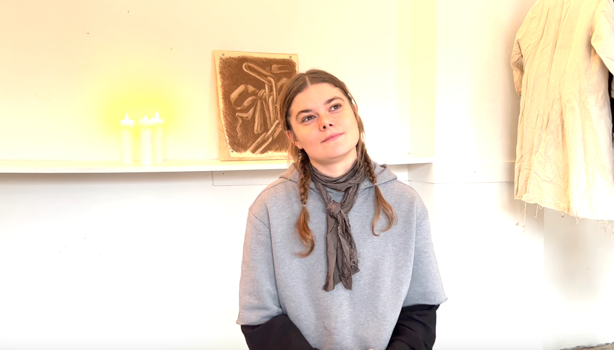
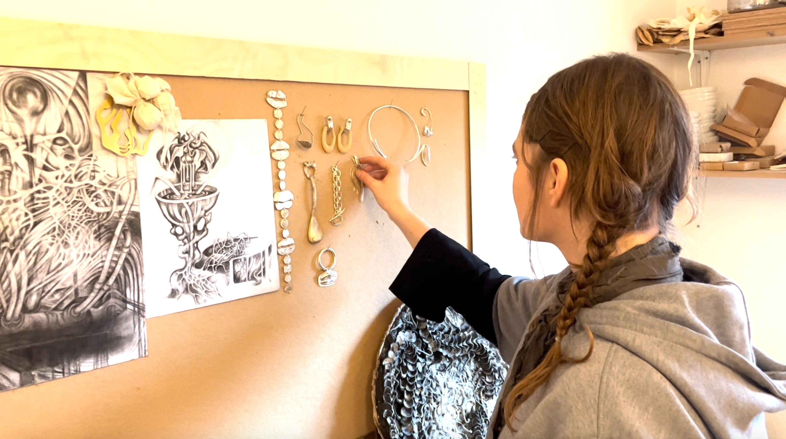
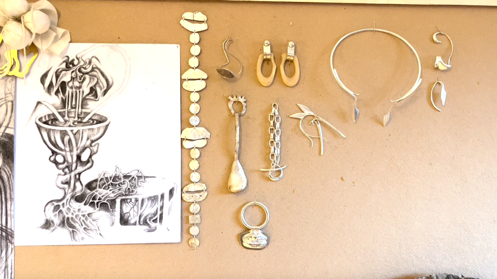
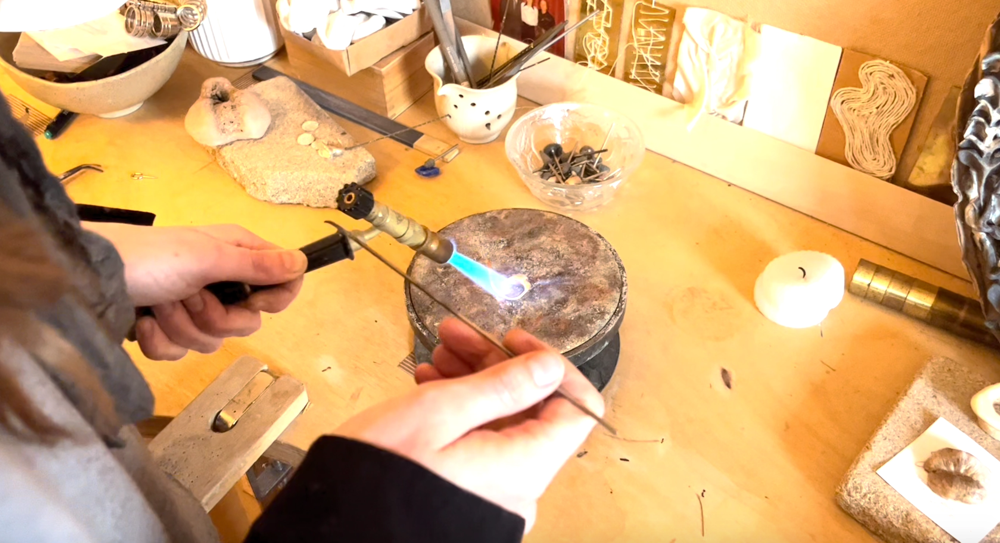
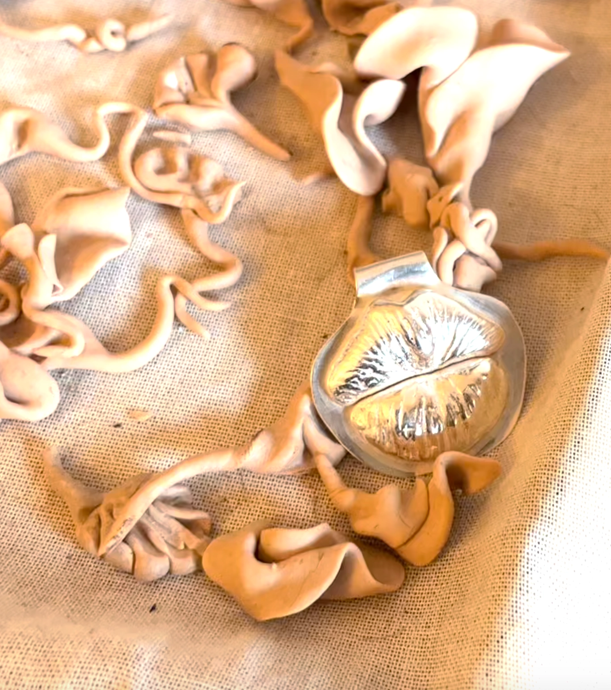
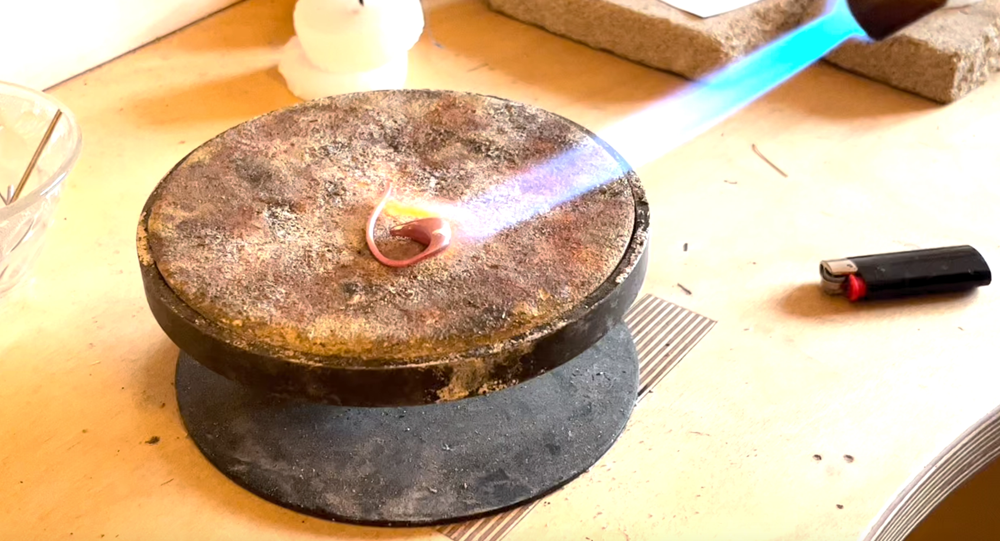
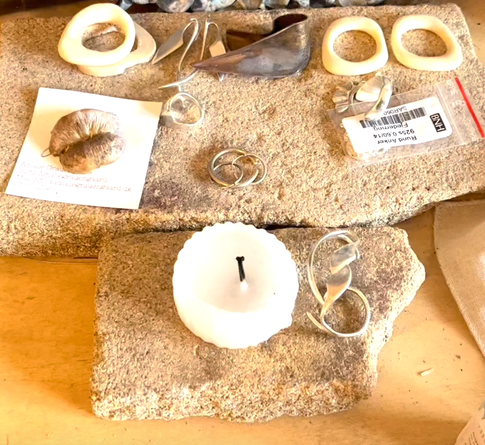
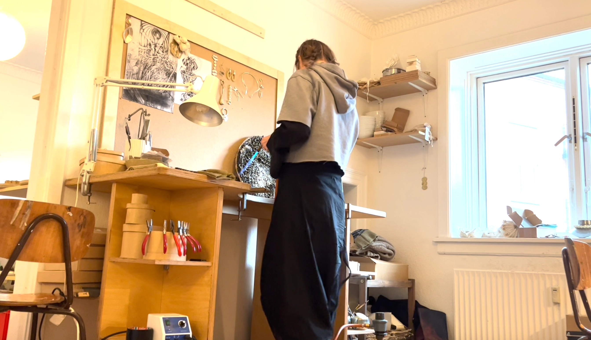
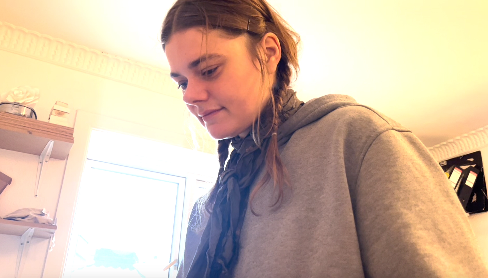
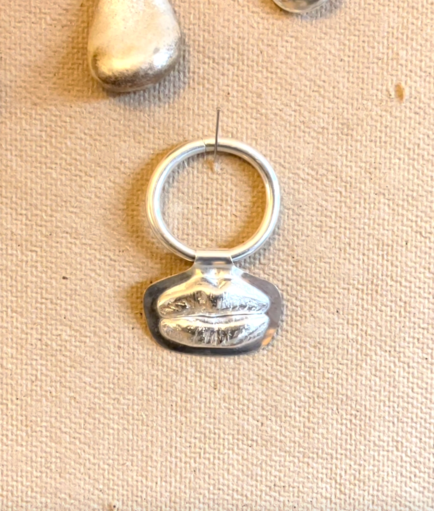

Passion for Jewlery
Min passion video hat jeg valgt at fokusere på min veninde Amalie Graunengaard der speciallisere sig i at lave smykker. Amalie har sit eget atelier på Nørrebro og har også sit andet smykke cono_jewlvery, hvor hun fokusere på at lave smykker og støbninger af mennesker med vulvaer.
*DISCLAIMER: Har colorcorrected så det ser godt ud i premiere pro så det ser rigtigt ud, men ændre sig hver gang jeg eksporter den, så det blev som det blev.
Stil billeder









